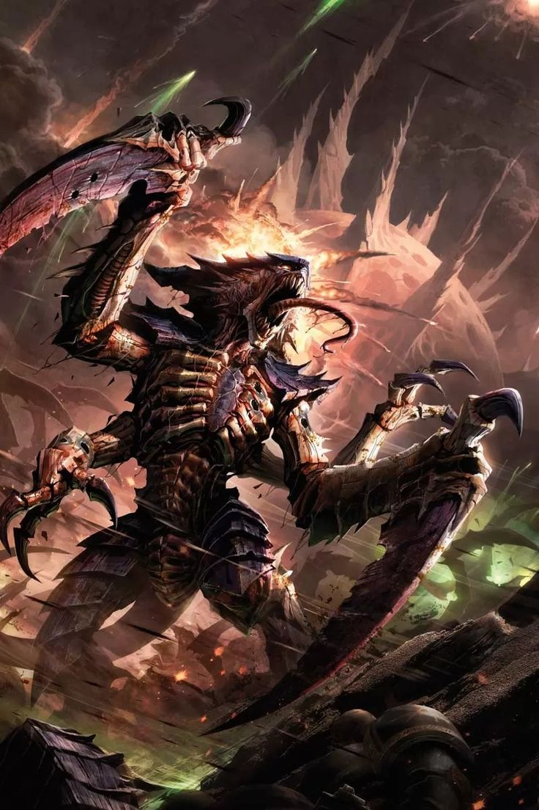
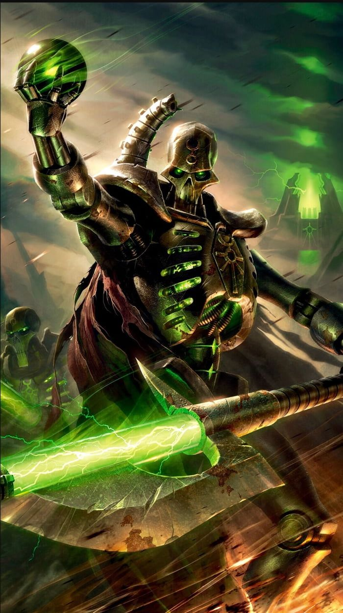
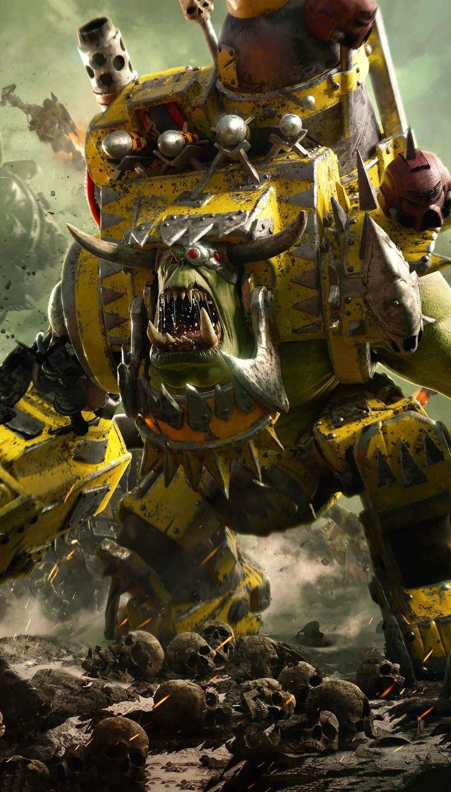

Xenos
Xenos (pronounced ZEE-nahs or zehn-AHS) is a High Gothic term used by the people and adepta of the Imperium of Man that means "stranger" and "alien." It is often used by the Adeptus Terra to signify intelligent enemy aliens or off-world, non-Human forces.
The main starfaring, intelligent xenos species in the Milky Way Galaxy are the Drukhari, Craftworld Aeldari, Necrons, Orks, T'au and Tyranids, though there are countless other intelligent alien species, most of them hostile, that Mankind has encountered over the long millennia of its expansion across the stars.
Contents
Tyranids
Tyranids
The Tyranids are an extragalactic composite species of hideous, insectoid xenos. They actually comprise an entire space-faring ecosystem comprised of innumerable different bioforms which are all variations on the same genetic theme.
The Tyranids are unlike any other intelligent species encountered by Humanity. They are the ultimate predators; to them, all living things, from the lowliest insect to the most advanced starfaring civilisation, are mere prey. Only now are the inhabitants of the galaxy realising the scale of the threat; unless the Tyranids can be stopped, it will mean nothing less than the extinction of all life.
The Tyranid species is ultimately dedicated solely to its own survival, propagation and evolutionary advancement. The Tyranids collectively form a monstrous superorganism that travels across the universe in their great hive fleets of biomechanical Hive Ships, systematically consuming all other biomatter to enable their own rapid evolution and reproduction.
The Tyranids are likened to a galactic swarm consuming everything in its path, feeding on entire worlds and leaving only dead husks in their wake. Their threat is such that an unprotected planet can be infested and stripped clean of all its organic material in a matter of solar weeks without even slowing down the advance of the hive fleet.
All Tyranid organisms are "synaptic" (psychically-reactive), and each Tyranid creature within a hive fleet shares and contributes to a communal Hive Mind, which allows the trillions of beings comprising the Tyranid hive fleets to communicate and organise instantaneously on a staggering scale.
The mentality of the Tyranid approach to warfare can be described with the phrase "quantity has a quality all its own." From the "lowly" Ripper, to the deadly Hive Tyrant and beyond, the signature of the Tyranid species is that they overwhelm their foes with sheer numbers, reproducing massive numbers of highly virulent organisms in record time from the biochemical soup that they derive from the biospheres of the worlds they consume.
The components of a Tyranid hive fleet travel almost exclusively in large groups known as "swarms" that possess specialised biomechanical creatures for destroying and consuming a wide variety of prey life forms.
The Tyranids have evolved sophisticated methods for facilitating genetic transfer across species boundaries. As a result, a significant goal of any Tyranid invasion is acquisition of useful new biological traits from other lifeforms.
These are used by the Hive Mind to enhance the Tyranids' effectiveness in consuming new worlds to gain more of the necessary organic raw materials for further reproduction and directed evolution. All Tyranids are reproduced by a single, highly intelligent female bioform known as a Norn-Queen.
A hive fleet's Norn-Queens are the most important Tyranids within the fleet, for if they are injured or killed the Tyranids cannot reproduce their numbers from the captured bio-mass. As a result, Norn-Queens can be found only at the heart of the largest and most-well defended Tyranid Hive Ships.
Necrons
Necrons
The Necrons are a mysterious xenos species of humanoid, robotic skeletal warriors that have lain dormant in their stasis-tombs for more than 60 million Terran years, though they have begun to awaken at last. They are the soulless creations, former servants and now the captors of the ancient C'tan, the terrible Star Gods of Aeldari myth.
The Necrons are ancient beyond reckoning, predating even the birth of the Aeldari. At long last, however, they are beginning to awaken from their Tomb Worlds, for the galaxy is ripe for conquest and the restoration of the Necron Empire since the disappearance of the Old Ones more than 60 million standard years ago.
The Necrons are a completely robotic humanoid species whose technological prowess is probably unmatched by any of the other intelligent species of the galaxy. Yet out of a desire for vengeance against the more fortunate, long-lived, ancient xenos people called the Old Ones, and the trickery of the godlike intelligences known as the C'tan, the Necrons shed their original organic forms and lost all forms of compassion and empathy.
They have become instead ruthless, undying killing machines who are determined to exert their mastery over the galaxy once more. Across the galaxy, this ancient and terrible species is stirring back to life. Entombed in stasis-crypts for millions of Terran years, they have slumbered through the aeons, waiting for the galaxy to heal from the wounds of a long and bloody war.
Now, after sixty million standard years of dormancy, a great purpose begins. On desolate worlds thought long-bereft of all life, ancient machineries wake into grim purpose, commencing the slow process of revivification that will see those entombed within freed to stride across the stars once again. The unstoppable, undying Necron legions are rising. Let the galaxy beware.
All Necrons, from the lowliest of warriors to the most regal of lords, are driven by one ultimate goal, to restore their ancient ruling dynasties to glory and to bring the galaxy under their rule once more, as it was in ancient days.
Such was the edict long ago encoded into the Necrons' minds, and it is a command so fundamental to their being that it cannot be denied. Yet it is no small task, for the Necrons are awakening from their Tomb Worlds to find the galaxy of the 41st Millennium as recorded by the Imperial Calendar much changed.
Many Tomb Worlds are no more, destroyed by cosmic disaster or alien invasion. Others are damaged, their entombed legions afflicted by slow madness or worn to dust by entropy's irresistible onset.
Degenerate alien species squat amongst the ruins of those Necron Tomb Worlds that remain, little aware of the greatness they defile with their upstart presence. Yet there is no salvation to be found in such ignorance. The undying have come to reclaim their lands, and the living shall be swept aside.
Yet if billions of Necrons have been destroyed by the passage of eternity, countless billions more remain to see their dominion reborn. They are not creatures of flesh and blood, these Necrons, but android warriors whose immortal forms are forged from living metal. As such, they are almost impervious to destruction, and their mechanical bodies are swift to heal even the gravest wounds.
Given time, severed limbs reattach, armour plating reknits and shattered mechanical organs are rebuilt. The only way, then, to assure a Necron's destruction is to overwhelm its ability to self-repair, to inflict such massive damage that its ancient regenerative systems cannot keep pace.
Even then, should irreparable damage occur, the Necron will often simply "phase out" -- an automated viridian teleportation beam returning it to the safety of the stasis-crypts, where it remains in storage until such time as repairs can be carried out.
The sciences by which such feats are achieved remain a mystery to outsiders, for the Necrons do not share their secrets with lesser species and have set contingencies to prevent their supreme technologies from falling into the wrong hands. Should a fallen Necron warrior fail to phase out, it self-destructs and is consumed in a blaze of emerald light.
Outwardly, this appears little different to the glow of teleportation, leaving the foe to wonder whether the Necron has finally been destroyed or has merely retreated to its tomb. Victory over the Necrons is therefore always a tenuous thing, and a hard-won battle grants little surety of ultimate victory.
For the Necrons, defeats are minor inconveniences -- the preludes to future triumphs, nothing more. Immortality has brought patience; the perils that the Necrons survived in ancient times carry the lesson their people can overcome any opposition, if they have but the will to try. And if the Necrons possess only a single trait, it is a will as unbending as adamantium.
Only one hope can now preserve the other intelligent species of the galaxy from the Necrons' advance, from the endless legions of silent and deathless warriors rising from long-forgotten tombs. If the Necrons can be prevented from waking to their full glory, if the scattered Tomb Worlds can be prevented from unifying, then there is a chance of survival.
If not, then the great powers of the galaxy will surely fall, and the Necrons shall rule supreme for all eternity -- undying, cruel and utterly implacable.
Orks
Orks
The Orks, also called Greenskins, are a savage, warlike, green-skinned species of bestial, asexual humanoids who are spread all across the galaxy. They are unique among the intelligent xenos species known to Mankind in that they possess the physiological features of both animals and fungi. They share many physical and cultural features with the dark fantasy Warhammer universe's Orcs (and were initially called "Space Orcs" to distinguish them).
Orks are seen by their enemies (pretty much everyone else in the universe) as primitive, barbaric, hyper-violent, and crude, but they are the most successful and widepsread intelligent species in the whole galaxy, outnumbering possibly every other intelligent starfaring species, even Humanity (with the very plausible exception of the Tyranids).
Greenskins are one of the most dangerous alien races to plague the galaxy. Numerous beyond belief and driven always to fight and conquer, the Orks threaten every single intelligent species of the galaxy.
Orks are possibly the most warlike aliens in the 41st Millennium, and their number is beyond counting. Amid constant, seething tides of battle and bloodshed, burgeoning Ork stellar empires rise and fall.
Mercifully most are short-lived, soon destroying themselves in a maelstrom of violence and internecine conflict, but should the Orks ever truly unify, they would crush all opposition.
Orks generate a potent psychic gestalt field that allows them to accomplish many feats of technological engineering that might otherwise seem impossible. At the same time, the power of this psychic field is directly proportional to the number of Greenskins present in a given location.
The more Orks that gather, the more Orks are drawn to them, at the same time that the power and intelligence of the Greenskins begins to grow with their numbers.
The Orks' unquenchable thirst for battle has always proved their downfall: historically, the Ork tribes have spent much of their time fighting amongst themselves, waging brutal wars with only the strongest surviving. On occasion, an Ork leader will emerge who is mighty enough to defeat his rivals and unite the warring tribes.
His success draws other tribes to him, and soon a great WAAAGH! is underway -- partly a migration, partly a holy war that can exterminate the populations of entire star systems.
When the Orks are on the rampage, the galaxy trembles, and in the Age of the Dark Imperium there are more WAAAGH!s rising than ever before recorded.